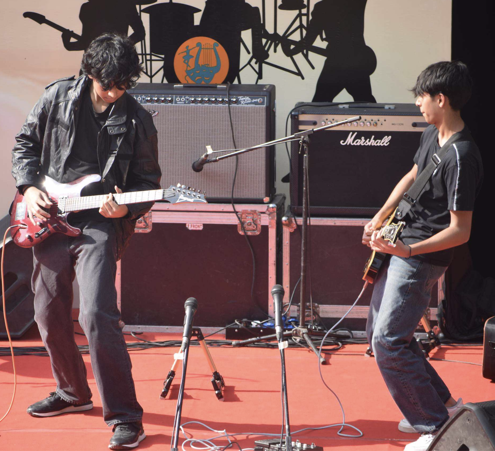

MUSIC · FESTIVAL OF HOPE 2026
Jugalbandish
Come prepared. Play together. Make it count.
A live rock band competition celebrating musicianship, collaboration, creativity and stage presence.

JUGALBANDISH 2026
This is a
band competition.
Jugalbandish is a rock band competition for student bands.
Every participating act must perform as a band and demonstrate meaningful collaboration between its members.
Solo vocal performances will NOT be accepted.
Bands may perform original compositions, covers, or a combination of both, subject to the competition guidelines.
BAND COMPOSITION
Build the
right sound.
Minimum 3 Members
Each band must consist of a minimum of 3 members.
All Members Must Perform
All performers must actively contribute to the live band performance.
Band Representative
Each band must nominate one member as the Band Representative. This person will be the primary point of contact with the organisers.
Registered Members Only
Only registered members of the participating band may perform.
Band Membership Changes
Any change in band membership must be communicated to the organisers before the competition.
Guest Musicians
Guest musicians are not permitted unless approved by the organisers in advance.
Multiple Bands
A band member may not perform with another competing band unless explicitly permitted by the organisers.
PERFORMANCE
Make every
minute count.
Each band will receive a maximum performance time of 15 minutes, including stage setup and changeover where specified by the organisers.
Bands should plan their set carefully to remain within the allocated time.
Exceeding the allocated time may result in penalty points or deduction of marks.
The organisers may stop a performance if the band significantly exceeds its allocated time.
Bands must be ready backstage before their scheduled performance slot.
SOUND CHECK
Sound check
is not rehearsal.
Time Allocation
Each band will receive approximately 15 minutes for sound check.
Schedule
Sound-check times will be determined by the organisers and must be strictly followed.
Arrive Early
Bands should arrive at the venue well before their allocated sound-check time.
Use the Time Efficiently
Sound check should be used to establish levels, monitor requirements, instrument balance and effects.
Late Arrival
Bands arriving late may have their sound-check time reduced or forfeited.
Preparation
Sound checks are not rehearsal sessions. Bands must arrive fully prepared.
EQUIPMENT
Know what to
bring.
The organisers will provide the core sound infrastructure required for the event.
Bands are responsible for bringing their own instruments and specialised personal equipment.
Do not assume specialised equipment will be provided unless it has been specifically confirmed by the organisers.
BAND EQUIPMENT
Bring your
own essentials.
Electric or acoustic guitars.
Bass guitars.
Keyboards and synthesizers.
Guitar and bass amplifiers, where required.
Pedalboards and effects pedals.
FX processors.
Personal instrument accessories.
Instrument cables and leads.
Power adapters and specialised equipment.
Drum-specific accessories not included in the provided drum kit.
DRUMS
The kit is
provided.
A standard drum kit will be provided by the organisers.
Bands may bring their own cymbals, snare, pedals, sticks or other personal drum equipment if preferred.
Any additional drum equipment must be communicated to the organisers in advance.
Drum kit components must not be removed, relocated or significantly reconfigured without permission from the stage or technical crew.
TECHNICAL REQUIREMENTS
Tell the crew
what you need.
All bands must provide accurate information about their instrumentation and technical requirements before the event.
Unusual equipment, complex routing, backing tracks, electronic instruments and specialised FX must be declared in advance.
Bands are responsible for ensuring that their equipment is in working condition.
The technical team's instructions must be followed during sound check and performance.
Participants may not independently alter the PA, electrical connections, microphones, amplifiers or other technical equipment.
Electrical equipment must be used safely and responsibly.
BACKING TRACKS & AUDIO
Keep it
live.
Backing tracks, sequences, samples and pre-recorded material are permitted but must be declared to the organisers before the competition.
Backing material must not replace the primary live performance of the band.
Jugalbandish is intended to showcase live musicianship and band performance.
The organisers may reject backing material that creates an unfair advantage or substantially replaces the live performance.
REPERTOIRE
Choose your
music carefully.
Bands are responsible for selecting repertoire appropriate for the competition.
Performances should demonstrate musical preparation, ensemble skills, creativity and stage presence.
Bands performing covers should acknowledge the original artist or composer where required.
Offensive, discriminatory, hateful or otherwise inappropriate material may result in disqualification.
The organisers may stop a performance containing inappropriate or unacceptable content.
STAGE CONDUCT
Perform
professionally.
Bands must maintain professional conduct throughout the competition.
Intentionally damaging venue property or equipment is prohibited.
Throwing instruments, microphones, equipment or other objects is prohibited.
Unsafe behaviour on stage may result in immediate termination of the performance.
Bands must leave the stage area clean and orderly after their performance.
Damage caused by negligent or deliberate actions may become the financial responsibility of the participating band.
SAFETY
Keep the stage
safe.
All participants must follow venue safety procedures.
Cables must be secured appropriately and must not create hazards on stage.
Participants must not interfere with electrical, lighting, rigging or technical equipment.
The organisers and technical crew have the authority to stop any activity that is considered unsafe.
JUGALBANDISH 2026
Ready to
make some noise?
Bring your band together and take the stage at Jugalbandish. This is a celebration of musicianship, collaboration and live performance, where every member contributes to the sound of the whole.
Bring together your musicians, develop your arrangement and perform a set that represents your band's sound and identity.
Find your band's sound, own the stage and turn your preparation into a performance worth remembering.